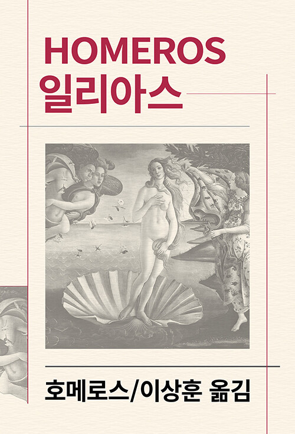

Ilias — 호메로스
서양 문학의 출발점이라 불리는 고대 그리스 서사시. 10년째 이어진 트로이 전쟁의 막바지, 아가멤논에게 전리품(브리세이스)을 빼앗긴 아킬레우스의 분노에서 시작해, 친구 파트로클로스의 죽음, 헥토르와의 결투, 그리고 프리아모스 왕에게 아들의 시신을 돌려주는 헥토르의 장례로 끝난다. 우리가 아는 '트로이 목마'는 등장하지 않는다. 마침 놀란 감독의 <오디세이>가 개봉한 참이라 시의적절했던 선정 — "필독서지만 혼자 읽을 엄두가 나지 않아 가져왔다"는 발제자의 고백과 함께, 차차차가 처음으로 고대 그리스 고전에 도전한 회차.